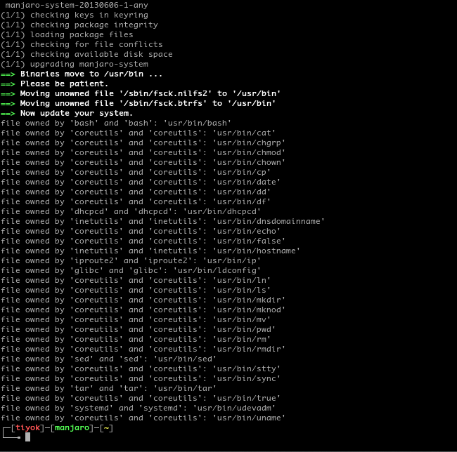

Binaries Move di Manjaro
Ternyata update filesystem (manjaro-system) pada distribusi Manjaro tidak memerlukan intervensi seperti pada distribusi Arch Linux. Semuanya ditangani secara otomatis, cukup pacman -Syu beres.

Oh iya saya dapat update ini setelah saya pindah mirror ke ftp.belnet.be, soalnya kambing out-of-date üòê
Rujukan: